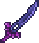
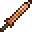

Грань ночи
Характеристики
Тип Оружие Меч
Урон 40 
Скорость 25 (Быстрая)
Атак/сек 2.4
Крит. шанс 4%
Отбрасывание 4.5 (Среднее)
Редкость Оранжевая
Продажа 1
 8
8 
Лучшая модификация Легендарный
Кол-во исследований 1 исследование
Грань ночи (Night's Edge) — особое оружие, которое является самым сильным дохардмодным мечом. При взмахе меч излучает тусклый фиолетовый свет, а также оставляет за собой след из тёмных частиц, подобных тем, которые появляются в искажении.
8
 Демонический алтарь
Демонический алтарь
 Мурамаса
Мурамаса
 Вулкан
Вулкан